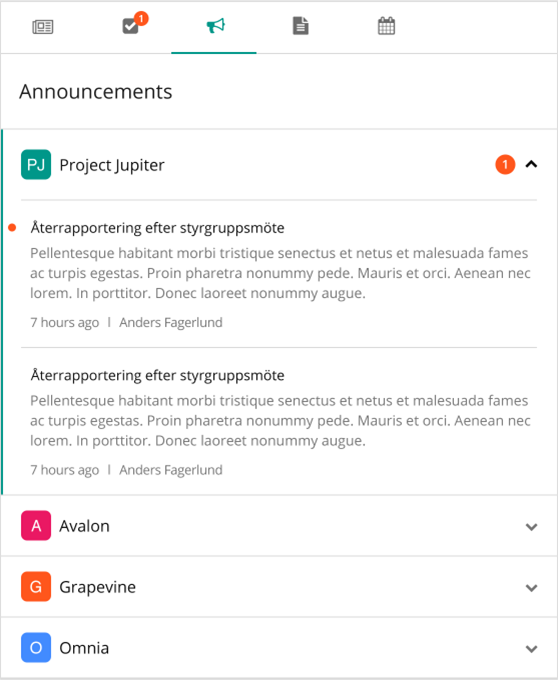

Omnia Foundation - November 2017
New Features
Color Theme
The Default Colors feature in Omnia Admin has been updated to support a Color Theme that will be applied to all components in Omnia. The previous user interface has been replaced and merge with the new one. The color theme consists of a Primary Color, an Accent Color and a color scale from Dark to Light.
The color set as Background Color in the previous version of Omnia, will be migrated to the Primary color. All other colors in the theme will use a grayscale by default and can be changed according to requirements. Any color set on existing components in Omnia will be kept for backward compatibility, but if possible, it is recommended to only change the theme. Colors on component level have been moved to a new tab called "Custom Colors".
Component Design aligned with Color Theme
The following components in Omnia Foundation have a new design based on the new Color Theme.


- Internet Explorer 11 enhancements: Script modules are dynamically loaded, bundle sizes have decreased and angular is now bootstrapped as one app.
- Angular 1 support requires a specific Omnia Feature to be activated and can be excluded from the bundle by removing the feature.
- My Sites navigation component cached to improve performance.
Bug Fixes
- Some features in the tinyMCE content editor did not work as expected. All features in the editor has now been ensured.
- Site templates were sorted wrong in the filter list in the Site Directory.
- When deleting a category in the notification panel, it was not possible to save the dialog in an easy way.
- Bug in Statistics Provider script that could lead to the statistics not being registered in Google Analytics.
- Problem with color picker in Omnia Admin when trying to pick custom colors.
- Problem to follow/unfollow site when running in Site Collection Only Mode.
- Problem to expand node in Term Picker in certain scenarios.
- The Show More link in the Userfeed had an unexpected behaviour.
November 2017 Patch 1 (1.0.8868)
- Error when creating Office 365 Group using account from a different domain.
- Global image location navigation node in Omnia Admin was removed by mistake.
- Error when going into Team Site Quick Settings if Site Properties feature was not activated on the site.